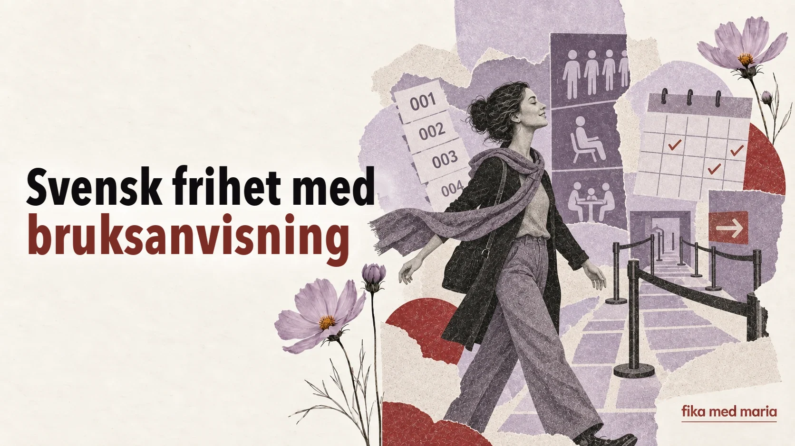

Den svenska friheten har en bruksanvisning: varför individualisternas land älskar regler så mycket

Sverige beskrivs ofta som den personliga frihetens land. Här är det inte brukligt att lägga sig i andras liv för mycket, vuxna fattar sina egna beslut och barn får tidigt säga sitt.
Samtidigt finns det en kalender i tvättstugan, i kön tar man en kölapp, för att ses måste man komma överens i förväg och vid soptunnorna hänger en utförlig sorteringsanvisning.
Det är ingen motsägelse. Svensk frihet fungerar ofta enligt formeln frihet under ansvar – frihet som går hand i hand med ansvar.
Fritt, så länge andra inte får ta konsekvenserna
Du kan lägga upp arbetsdagen på ditt eget sätt – om du håller det som är överenskommet. Du kan tillbringa tid i naturen – om du tar väl hand om platsen. Du kan använda den gemensamma tvättstugan – om du inte tar någon annans tid och lämnar den ren.
Gränsen går inte mellan ”tillåtet” och ”förbjudet”, utan mellan din egen frihet och besvär som andra får betala för.
Därför hör man ofta de här uttrycken på svenska:
- visa hänsyn – ta hänsyn till andra;
- ta ansvar – stå för det man gör;
- följa reglerna – hålla sig till det som gäller;
- respektera tiden – värna om allas tid;
- gemensamt ansvar – ett ansvar som vi delar.
Man gör inte så
Det svenska ordet man gör det möjligt att tala om en social norm utan att direkt anklaga någon.
Man kommer inte oanmäld.
Ungefär: det är inte brukligt att dyka upp utan förvarning.
Man tar inte den sista biten utan att fråga.
Ungefär: man frågar innan man tar den sista biten.
Så gör man inte.
Ungefär: det där är inte något man gör.
Frasen pekar inte ut någon skyldig, men visar tydligt var gränsen för acceptabelt beteende går.
Så brukar vi göra
När en svensk säger Så brukar vi göra här – ungefär ”här gör vi oftast så” – kan det låta som en neutral beskrivning. I själva verket innehåller frasen ofta en inbjudan att anpassa sig till den ordning som redan gäller.
På jobbet är det inte alltid ett absolut förbud mot att göra på ett annat sätt. Du kan fråga:
Finns det någon särskild anledning till att ni gör så?
Ungefär: är det av någon bestämd orsak som ni gör just så?
På så sätt avvisar du inte normen, utan tar reda på logiken bakom den.
Regler som ett sätt att undvika personlig makt
När det finns en tydlig kö, en kölapp eller ett bokningssystem beror beslutet mindre på vem som kräver högljuddast, vem som känner personalen bättre eller vem som är bra på att ordna saker informellt.
Mängden regler kan irritera, men samtidigt lovar de förutsägbarhet: en och samma procedur för alla.
Verkligheten lever förstås inte alltid upp till idealet. Men just att samma regler gäller alla förklarar varför det väcker starka reaktioner när någon tränger sig i kön eller tar en tid som någon annan har bokat.
Så reagerar du om du inte kände till regeln
Det defensiva svaret Men jag visste inte! förklarar situationen, men rättar inte alltid till den. Det är bättre att också visa att du är beredd att göra annorlunda:
Jag visste faktiskt inte det. Tack för att du säger till — då gör jag så nästa gång.
Ungefär: det var faktiskt nytt för mig, tack för att du sa till, och nästa gång gör jag på det viset.
Om regeln känns ologisk:
Jag vill gärna förstå. Kan du förklara hur det fungerar?
En granne förklarar en sorteringsregel som du inte kände till. Vilket svar hjälper dig att avsluta situationen på ett lugnt sätt?
- Det är inte mitt problem.
- Ingen har sagt det till mig, så jag tänker inte göra så.
- Okej, jag visste inte det. Då sorterar jag så nästa gång.
Visa svaret
Rätt svar: 3.
Språket hjälper dig att förstå vilka förväntningar som ligger bakom en kort anmärkning, en instruktion eller ett meddelande från grannarna. På lektionerna hos Fika med Maria lär vi oss att hantera sådana situationer, inte bara att översätta ord. Praktiska kurser.
Vad betyder visa hänsyn?
Att ta hänsyn till andra och bete sig så att man inte orsakar dem onödigt besvär.
Får man ifrågasätta regler?
Ja. Oftast är det mer fruktbart att först ta reda på regelns syfte och sedan lugnt föreslå ett alternativ.